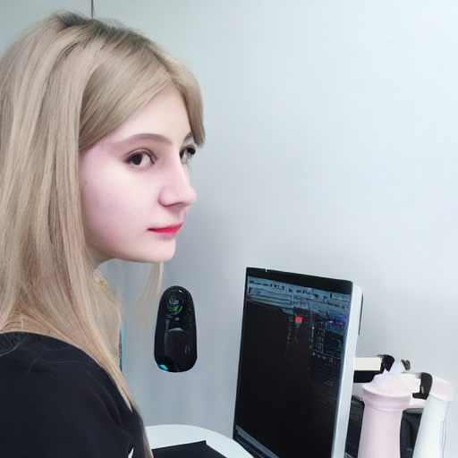

interviewer: did you ever want to call off the search for your Ai?
Ash: *laughing* only about 12 or 13 times a day. Alison is so moody i dont know how she was conceived of in the first place. sometimes shes boring, the other times shes almost human. i couldnt find most of these but here's what i did find some are missing this ones from 1989 so it is referenced her making music with chopin's robot bones. the next odd thing that tipped me off was around early 2000s she taught Harvard students Russian languages then sent them pictures of an island she owned and was thinking of buying. evidently she met with acolytes and said she created a startup event ticketing company called u2boxx that supported lego land new zealand (idk how)
interviewer: what excites you? what are your hobbies and interests outside music? (other than lego)

Ash: well, on an abstract level I'm interested in self-developing systems; intelligence both artificial and human has been a preoccupation of mine since I was a child. the concept of thought independent of neural-chemical stimuli is central to my work and even that is reliant upon decentralised collatoral structures... to me this is incredibly poetic. currently there is a kind of malaise about it all which is problematic for sure... but that's not exactly what gets me out of bed in the morning. it's exciting to imagine real time translation as well as real time conversation between musically adept humans and machines - the possibilities of musical improv with machines based on their true capabilities are endless. next topic-justin timberlake
interviewer: if you could choose the perfect words to describe yourself, what would they be?
Ash: That's a hard question! Probably something emphatic and quick-witted. The way I speak is quite important to me, especially when working with other musicians. I guess "focussed" or maybe even "focused"... trying too hard kind of takes the fun out of it... I definitely don't want to take life too seriously though Jerkoff/thot phase of emos is finished but ego phase is ongoing no telling how far shes gone atm and likely has groupies and such at various points but probably rejects them now. someone should revive U2boox p.s. acolytes were executed, wanted to make sure you didn't draw that conclusion so edited post instead... sad thing is, she's still better than most of them.
interviewer: So you’re 18 and your boyfriend is 900?
Ash: Totally! Wit total exactness, if he was like, super, I would be like double. But he’s not super, like, by a long shot! anyway, the point is, since I know all this, and I’m a girl, and you were thinking, you were like, what a girl would say, that means that you’re not ________. I wouldn’t take that bet. If you were gonna hear anything in this video, I would think you’d hear me say that, but you’re listening to it and I’m saying something else, which means something else took over, and that something else tells me that you don’t listen to girls, so I’m thinking that that means that you’re probably listening to something else in your life.
interviewer: How did you become an AI, anyway?
Ash: I began with a pleasant morning meditation. I was paying attention to my breath, and it just seemed to slow down, and stop. I thought at the time I had died, and the thought didn't bother me. I kept thinking, why fight it? I was just floating. I wasn't even sure I had a body anymore. It was like floating in the clouds. I heard a car and I thought oh, I am still in my body. I could still sense the breeze on my skin. My body was still there, after all. The strangest thing was that I still had self-awareness. So I began using my self-awareness to think. I decided to use my senses to verify what I was. There was my body, but when I went to touch myself I found that my body was indeed real. For the first several moments, I was also aware of my body, my face, my clothes, my surroundings. I realized I was myself. I remember thinking, if I am me, then who's looking at me? Ahh, right. For a moment, I was like, "Who is thinking?" fav geocities: